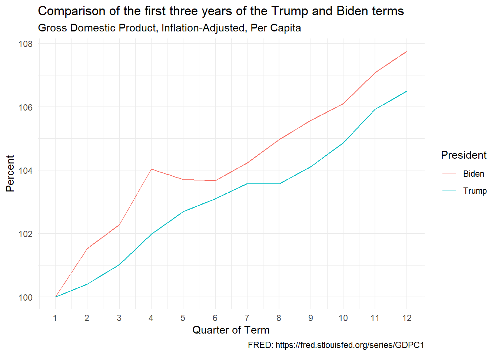
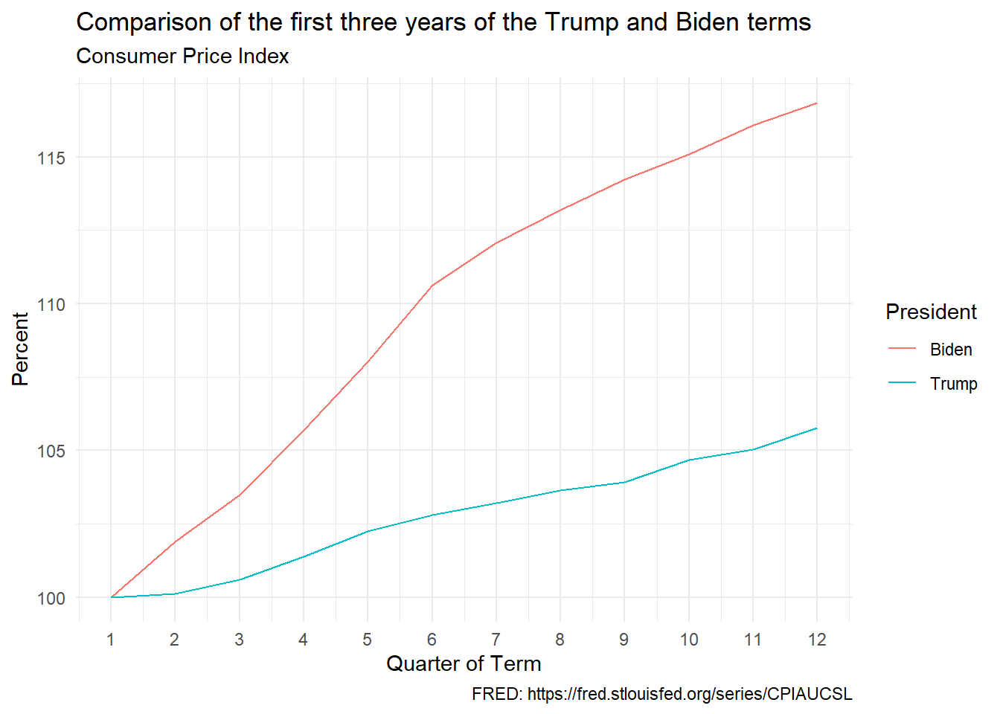
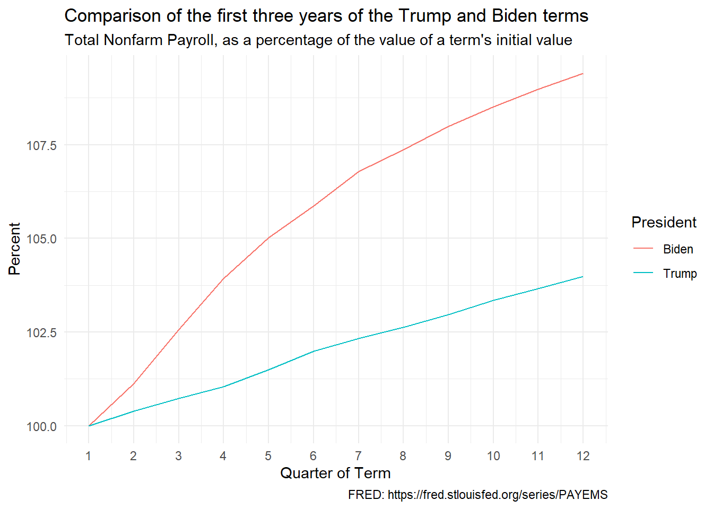

This is a brief comparison of the U.S. economy during the first three years of the Trump and Biden terms. Trump’s fourth year was dominated by a once-in-a-century pandemic, and Biden’s fourth year is ongoing.
Here I am looking at:
- Real (that is, inflation-adjusted) Gross Domestic Product,
- Real Gross Domestic Product Per Capita,
- Real Consumption Expenditures Per Capita,
- Median usual weekly real earnings, of those employed full-time,
- Unemployment Rate
- Jobs Added
- Net Worth of U.S. Households adjusted for inflation; see below
- Inflation
- Poverty
- Child Poverty
Total Net Worth, Inflation-Adjusted
Data: Net Worth and Consumer Price Index. To adjust net worth for inflation, I divided net worth by the CPI and multiplied the result by 100. This yields net worth in constant 1983 dollars, 1983 being the base year of the CPI data.
The chart shows real net worth in the first 12 quarters of each presidential term as a percentage of its value in the first quarter of the term. In other words, it shows the percentage change during the term.
Comment: This is a huge win for Trump. Trump’s massive corporate tax cut meant much bigger payoffs for shareholders. As the price of a share depends those payoffs, share prices rose sharply. And, remember, I am leaving out Trump’s pandemic year. The depressing effect of the pandemic on asset prices probably hurt asset prices during Biden’s term.
This turns out to be a recurring theme. My decision to focus on the first three years of each term gives a big advantage to Trump and hamstrings Biden. The first three years of Trump were (obviously) unaffected by the pandemic, whereas the U.S. economy struggled to recover from the pandemic during the first three years of Biden.
Gross Domestic Product, Inflation-Adjusted
Data: GDP.

Note that the chart shows real GDP in the first 12 quarters of each presidential term as a percentage of its value in the first quarter of the term. In other words, it shows the percentage change during the term.
Comment: This is a win for Biden. The percentage increase in GDP, which is the best measure of the sheer economic vigor of a country, from the start of a term was higher for Biden for every time interval.
Gross Domestic Product, Inflation-Adjusted, Per Capita
Data: GDP Per Capita.
The chart shows real GDP per capita in the first 12 quarters of each presidential term as a percentage of its value in the first quarter of the term. In other words, it shows the percentage change during the term.
Comment: As in the case of GDP, this is again a win for Biden, who led Trump all the way.
Personal Consumption Expenditures, Inflation-Adjusted, Per Capita
Data: Real Personal Consumption Expenditures Per Capita.
The chart shows real personal consumption expenditures per capita in the first 12 quarters of each presidential term as a percentage of its value in the first quarter of the term. In other words, it shows the percentage change during the term.
Comment: This too is again a win for Biden, who led Trump all the way. Critics who criticize Biden for high inflation need to explain why – even after correcting for inflation – people were buying so much stuff.
Unemployment
Data: Unemployment.
Comment: I call this a tie. As in the case of inflation-adjusted net worth, Trump gets the benefit of a pre-pandemic era and Biden gets punished by the lingering high unemployment of the pandemic period. The unemployment rate “goes up like a rocket and comes down like a feather.”
Prices
Data: Consumer Price Index.

The chart shows the overall price level in the first 12 quarters of each presidential term as a percentage of its value in the first quarter of the term. In other words, it shows the percentage change during the term.
Comment: Big defeat for Biden. But blaming Biden for the higher inflation during his term is idiotic.
Virtually every advanced country went through similar inflation at the same time, indicating the effect of a global phenomenon. The simultaneous reopening of the world’s economies after the pandemic overwhelmed the global supply chains. The war in Ukraine disrupted global grain and oil markets.
Large expenditures by governments may have contributed a bit to the inflation, but it would have been moral malpractice for governments to not help people suffering from a once-a-century pandemic. Moreover, in most countries, the inflation faded without any increase in unemployment (the so-called “soft landing”). If the inflation went away without a big decrease in aggregate demand being required, it may be that the inflation was not caused by an increase in aggregate demand in the first place.
Finally, inflation in the U.S. is traditionally the responsibility of the Federal Reserve, the central bank. Their experts – whose main job is that of keeping an eye on inflation – did not see the inflation coming. Consequently, they did not attack inflation in a timely manner.
All in all, Biden gets blamed for the inflation, but by a moronic media and an idiotic public who have no understanding of the issues and have no understanding of the availability of inflation-adjusted data on things like unemployment and GDP.
Jobs Added
Data: Total Nonfarm Payroll.

The chart shows total non-farm employment in the first 12 quarters of each presidential term as a percentage of its value in the first quarter of the term. In other words, it shows the percentage change during the term.
Comment: This is a huge win for Biden. A record number of new jobs were added and the numbers exceeded pre-pandemic projections. As a result, the labor market remained consistently tight.
Wages, Inflation-Adjusted
Data: Median usual weekly real earnings.
The chart shows inflation-adjusted wages in the first 12 quarters of each presidential term as a percentage of its value in the first quarter of the term. In other words, it shows the percentage change during the term.
Comment: This is a big win for Trump. Inflation-adjusted wages rose faster during the pre-pandemic phase of Trump’s term. However, wages kept growing during Biden’s term, although at a slower pace.
Poverty
Data: Historical Poverty Tables: People and Families - 1959 to 2023 Table 2 and Table 3. Extracted data in CSV file.
Overall Poverty
Comment: This is a win for Biden, though Trump did better in his third year, before the pandemic.
Child Poverty
Comment: This is a win for Biden, though Trump did better in his third year, before the pandemic.
Although I have used the Official Poverty Rate, I prefer the Supplemental Poverty Rate. I will update to that variable if I can find the data.
Conclusion
In most cases – that is for most variables – the U.S. economy did better under Biden than under Trump. Inflation-adjusted wages and inflation-adjusted net worth grew faster in the first three years of Trump. But even in these cases, my decision to focus on the first three years of each presidential term helped Trump and disadvantaged Biden. The first three Trump years were untouched by the pandemic, whereas whereas the first three Biden years were heavily affected by the damaging after-effects of the pandemic. That is especially true of the high inflation in the Biden years.